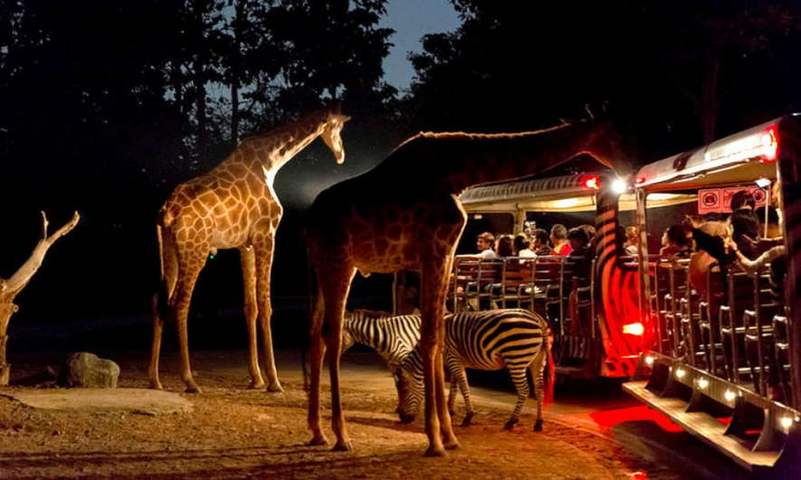

Singapore's Night Safari
The Night Safari is the world's first nocturnal zoo and offers a unique experience to observe animals in their naturalistic nighttime habitats. Visitors can explore the park on foot or take a tram ride that travels through different geographic regions, where they can see over 900 animals from 100 species.
One of the most exciting features of the Night Safari is the opportunity to see animals such as tigers, leopards, and Asian elephants in a setting that mimics their natural environment. The immersive experience allows for a deeper appreciation of wildlife and the importance of conservation.
Night Safari Gallery
